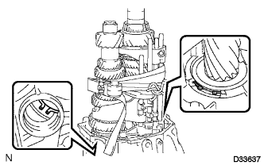

БЛОК МЕХАНИЧЕСКОЙ ТРАНСМИССИИ (для моделей с 1KD-FTV) > ПОВТОРНАЯ СБОРКА |
| 1. УСТАНОВИТЕ РАСЦЕПНОЙ РЫЧАГ № 1 |
Установите расцепной рычаг и шарнир рычага переключения на скобу блокировки.
Установите новое разрезное уплотнение на шарнир рычага переключения.
| 2. УСТАНОВИТЕ СТЕРЖЕНЬ ВИЛКИ ПЕРЕКЛЮЧЕНИЯ ПЕРЕДАЧ № 4 |
 |
Установите пружину сжатия и шариковый фиксатор переключения передач в скобу блокировки.
Установите стержень вилки переключения передач № 4.
| 3. УСТАНОВИТЕ ВИЛКУ ПЕРЕКЛЮЧЕНИЯ ПЕРЕДАЧ № 4 |
Установите вилку переключения передач № 4 на стержень вилки переключения передач № 4.
Используя бородок с тонким цилиндрическим концом на 5 мм и молоток, вбейте новый разрезной штифт в вилку переключения передач № 4 и стержень вилки переключения передач № 4.
| 4. УСТАНОВИТЕ ВИЛКУ ПЕРЕКЛЮЧЕНИЯ ПЕРЕДАЧ № 1 |
 |
Установите вилку переключения передач № 1 и шарнир переключения передач № 2 на стержень вилки переключения передач № 4.
Используя бородок с тонким цилиндрическим концом на 5 мм и молоток, вбейте новый разрезной штифт в шарнир переключения передач № 2 и стержень вилки переключения передач № 4.
| 5. УСТАНОВИТЕ СТЕРЖЕНЬ ВИЛКИ ПЕРЕКЛЮЧЕНИЯ ПЕРЕДАЧ № 1 |
Установите пружину сжатия и шариковый фиксатор переключения передач в скобу блокировки.
Установите стержень вилки переключения передач № 1 на скобу блокировки.
| 6. УСТАНОВИТЕ ШАРНИР ПЕРЕКЛЮЧЕНИЯ ПЕРЕДАЧ № 1 |
Установите шарнир переключения передач № 1 на стержень вилки переключения передач № 1.
Используя бородок с тонким цилиндрическим концом 5 мм и молоток, вбейте новый разрезной штифт в шарнир переключения передач № 1 и стержень вилки переключения передач № 1.
| 7. УСТАНОВИТЕ СТЕРЖЕНЬ ВИЛКИ ПЕРЕКЛЮЧЕНИЯ ПЕРЕДАЧ № 2 |
 |
Установите пружину сжатия и шариковый фиксатор переключения передач в скобу блокировки.
Установите стержень вилки переключения передач № 2 на скобу блокировки.
| 8. УСТАНОВИТЕ ВИЛКУ ПЕРЕКЛЮЧЕНИЯ ПЕРЕДАЧ № 2 |
Установите вилку переключения передач № 2 и закрепите ее новым болтом.
| 9. УСТАНОВИТЕ СТЕРЖЕНЬ ВИЛКИ ПЕРЕКЛЮЧЕНИЯ ПЕРЕДАЧ № 3 |
 |
Установите пружину сжатия и шариковый фиксатор переключения передач в скобу блокировки.
Установите стержень вилки переключения передач № 3 на скобу блокировки.
| 10. УСТАНОВИТЕ ВИЛКУ ПЕРЕКЛЮЧЕНИЯ ПЕРЕДАЧ № 3 |
 |
Установите вилку переключения передач № 3 и закрепите ее новым болтом.
| 11. УСТАНОВИТЕ ИГОЛЬЧАТЫЙ ПОДШИПНИК КАРТЕРА ТРАНСМИССИИ |
С помощью SST установите подшипник на передний картер трансмиссии.
| *a | Передняя сторона |
| 12. УСТАНОВИТЕ САЛЬНИК КАРТЕРА ТРАНСМИССИИ |
С помощью SST и молотка вбейте новый сальник в передний картер трансмиссии, соблюдая указанный на рисунке размер A.
Нанесите трансмиссионное масло на кромку сальника.
| 13. УСТАНОВИТЕ ПРУЖИННОЕ СТОПОРНОЕ КОЛЬЦО ВАЛА ПЕРЕДНЕГО ПОДШИПНИКА |
 |
С помощью съемника стопорных колец установите 2 пружинных стопорных кольца.
| 14. УСТАНОВИТЕ МАСЛОПРИЕМНУЮ ТРУБКУ № 3 |
Установите маслоприемную трубку № 3 на передний картер трансмиссии.
| 15. УСТАНОВИТЕ ПЕРЕДНИЙ КАРТЕР ТРАНСМИССИИ |
Нанесите трансмиссионное масло на все трущиеся и вращающиеся поверхности.
Предварительно установите выходной вал, первичный вал, вал задающей шестерни и узел привода, и свяжите их куском веревки или шнура.
|  |
С помощью съемника стопорных колец растяните 2 пружинных стопорных кольца и установите выходной вал, первичный вал, вал задающей шестерни и узел привода.
Развяжите выходной вал, первичный вал, вал задающей шестерни и узел привода.
 |
С помощью шестигранной головки на 27 мм установите пробку на передний картер трансмиссии.
Установите скобу блокировки и закрепите ее 4 болтами.
| 16. УСТАНОВИТЕ ПРОМЕЖУТОЧНУЮ ШЕСТЕРНЮ ЗАДНЕГО ХОДА |
Установите промежуточную шестерню заднего хода, подшипник промежуточной шестерни заднего хода и вал промежуточной шестерни заднего хода.
| *a | 15° |
| 17. УСТАНОВИТЕ ВЫКЛЮЧАТЕЛЬ СВЕТА ЗАДНЕГО ХОДА В СБОРЕ |
 |
С помощью SST установите новую прокладку и выключатель света заднего хода на передний картер трансмиссии.
| 18. УСТАНОВИТЕ РЫЧАГ ВЫБОРА И ПЕРЕКЛЮЧЕНИЯ ПЕРЕДАЧ |
Установите пружину и штифт шарикового фиксатора в рычаг выбора и переключения передач.
Установите рычаг выбора, кулачок выбора и пластину блокировки на вал рычага.
С помощью бородка с тонким цилиндрическим концом 5 мм и молотка вбейте стопорный штифт в вал рычага.
Вверните новый болт в рычаг выбора и переключения передач.
Установите новое разрезное уплотнение на вал рычага.
| 19. УСТАНОВИТЕ ВАЛ РЫЧАГА ВЫБОРА И ПЕРЕКЛЮЧЕНИЯ ПЕРЕДАЧ |
Совместите канавку на кулачке выбора и переключения передач с валом промежуточной шестерни заднего хода, а захват с канавкой в узле привода, а затем установите вал рычага выбора и переключения передач.
| 20. УСТАНОВИТЕ МАСЛОПРИЕМНУЮ ТРУБКУ № 2 |
Установите маслоприемную трубку № 2 на средний картер трансмиссии.
| 21. УСТАНОВИТЕ ПРОБКУ СЛИВНОГО ОТВЕРСТИЯ В СБОРЕ |
Установите новую прокладку и пробку сливного отверстия на средний картер трансмиссии.
| 22. УСТАНОВИТЕ СРЕДНИЙ КАРТЕР ТРАНСМИССИИ |
Нанесите герметик на средний картер трансмиссии, как показано на рисунке.
| *1 | Герметик |
Закрепите средний картер трансмиссии 11 болтами.
| 23. УСТАНОВИТЕ БОЛТ ВАЛА ПРОМЕЖУТОЧНОЙ ШЕСТЕРНИ ЗАДНЕГО ХОДА |
Установите новую прокладку и болт вала промежуточной шестерни заднего хода на вал промежуточной шестерни заднего хода.
| 24. УСТАНОВИТЕ МАСЛООТДЕЛИТЕЛЬ ТРАНСМИССИИ |
 |
Установите маслоотделитель трансмиссии и закрепите его 2 болтами.
| 25. УСТАНОВИТЕ ИГОЛЬЧАТЫЙ РОЛИКОВЫЙ ПОДШИПНИК ПЕРЕХОДНИКА РАЗДАТОЧНОЙ КОРОБКИ |
С помощью SST установите подшипник на переходник раздаточной коробки.
| *a | Передняя сторона |
| 26. УСТАНОВИТЕ ЗАДНИЙ РАДИАЛЬНЫЙ ШАРИКОВЫЙ ПОДШИПНИК ЗАДАЮЩЕЙ ШЕСТЕРНИ |
Смажьте новый задний радиальный шариковый подшипник задающей шестерни трансмиссионным маслом, а затем установите его на переходник раздаточной коробки с помощью SST и пресса.
Установите стопорную пластину подшипника и закрепите ее болтом.
| 27. УСТАНОВИТЕ ЗАДНИЙ ПОДШИПНИК ВЫХОДНОГО ВАЛА |
С помощью SST и пресса запрессуйте 2 новых задних подшипника выходного вала (наружные кольца) в переходник раздаточной коробки.
| 28. УСТАНОВИТЕ ПРОБКУ КАРТЕРА ПЕРЕХОДНИКА РАЗДАТОЧНОЙ КОРОБКИ |
Установите пробку картера на переходник раздаточной коробки.
| 29. УСТАНОВИТЕ САЛЬНИК МАСЛООТДЕЛИТЕЛЯ |
Установите сальник маслоотделителя в переходник раздаточной коробки.
| 30. УСТАНОВИТЕ МАСЛОПРИЕМНУЮ ТРУБКУ № 1 |
Установите маслоприемную трубку № 1 на переходник раздаточной коробки.
| 31. УСТАНОВИТЕ ПРОБКУ НАЛИВНОГО ОТВЕРСТИЯ МЕХАНИЧЕСКОЙ ТРАНСМИССИИ |
Установите 2 новых прокладки и 2 пробки наливных отверстий трансмиссии на переходник раздаточной коробки.
| 32. УСТАНОВИТЕ ПЕРЕХОДНИК РАЗДАТОЧНОЙ КОРОБКИ |
Нанесите герметик на переходник раздаточной коробки, как показано на рисунке.
| *1 | Герметик |
Установите переходник раздаточной коробки и 2 кронштейна на картер трансмиссии и закрепите их 10 болтами.
| 33. УСТАНОВИТЕ ЗАГЛУШКУ ШАРИКОВОГО ФИКСАТОРА ПЕРЕКЛЮЧЕНИЯ ПЕРЕДАЧ |
Установите шарик и пружину сжатия в переходник раздаточной коробки.
Установите новую заглушку шарикового фиксатора переключения передач на переходник раздаточной коробки.
| 34. УСТАНОВИТЕ ЗАДНЮЮ УСТАНОВОЧНУЮ ГАЙКУ ВЫХОДНОГО ВАЛА МЕХАНИЧЕСКОЙ ТРАНСМИССИИ |
С помощью ремня и деревянного бруска надежно закрепите трансмиссию на рабочем столе.
Установите новую распорную втулку выходного вала и новый задний подшипник выходного вала.
Вручную наживите новую заднюю установочную гайку.
| *1 | Распорная втулка выходного вала |
| *2 | Задний подшипник выходного вала |
| *3 | Задняя гайка крепления выходного вала механической трансмиссии |
Переместите вал рычага выбора и переключения передач в положение N.
Используя SST, поверните выходной вал 15 раз со скоростью не более 100 об/мин, чтобы усадить подшипник.
С помощью SST и динамометрического ключа измерьте преднатяг выходного вала.*1
Введите в зацепление шестерню 5-й передачи, а затем закрепите первичный вал с помощью SST.
| *1 | Первичный вал |
С помощью SST и динамометрического ключа затяните гайку.
Переместите вал рычага выбора и переключения передач в положение N.
Используя SST, поверните выходной вал 15 раз со скоростью не более 100 об/мин, чтобы усадить подшипник.
С помощью SST и динамометрического ключа измерьте преднатяг выходного вала.*2
Отрегулируйте преднатяг так, чтобы расхождение показаний на шагах *1 и *2 соответствовало требованиям.
С помощью молотка и зубила накерните заднюю установочную гайку.
| 35. УСТАНОВИТЕ КРЫШКУ КАРТЕРА МЕХАНИЧЕСКОЙ ТРАНСМИССИИ |
Нанесите герметик на крышку картера трансмиссии, как показано на рисунке.
| *1 | Герметик |
Установите крышку картера трансмиссии, зафиксировав ее 4 болтами.
| 36. УСТАНОВИТЕ КОЖУХ РЫЧАГА ПЕРЕКЛЮЧЕНИЯ ПЕРЕДАЧ |
Установите кожух рычага переключения передач и закрепите его болтом.
| 37. УСТАНОВИТЕ ДЕРЖАТЕЛЬ НАПОЛЬНОГО РЫЧАГА ПЕРЕКЛЮЧЕНИЯ ПЕРЕДАЧ В СБОРЕ |
Нанесите герметик на держатель напольного рычага переключения передач, как показано на рисунке.
| *1 | Герметик |
Установите держатель напольного рычага переключения передач и закрепите его 4 болтами.
| 38. УСТАНОВИТЕ ЧЕХОЛ ОПОРЫ ВИЛКИ ВЫКЛЮЧЕНИЯ СЦЕПЛЕНИЯ |
Установите чехол опоры на передний картер трансмиссии.
| 39. УСТАНОВИТЕ ОПОРУ ВИЛКИ ВЫКЛЮЧЕНИЯ СЦЕПЛЕНИЯ |
Установите опору вилки выключения сцепления в блок механической трансмиссии.
| 40. УСТАНОВИТЕ ВИЛКУ ВЫКЛЮЧЕНИЯ СЦЕПЛЕНИЯ В СБОРЕ |
Установите вилку выключения сцепления.
Нанесите консистентную смазку для шлицевого соединения сцепления на шлицы первичного вала.
| *1 | Смазка для шлицевого соединения сцепления |
| 41. УСТАНОВИТЕ ПОДШИПНИК ВЫКЛЮЧЕНИЯ СЦЕПЛЕНИЯ В СБОРЕ |
Смажьте подшипник выключения сцепления смазкой для муфты выключения сцепления и закрепите его на вилке выключения сцепления фиксатором.
| *1 | Смазка для ступицы выключения сцепления |